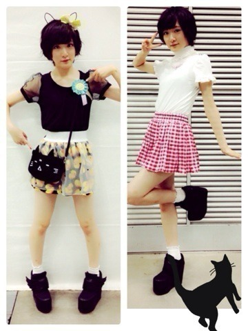
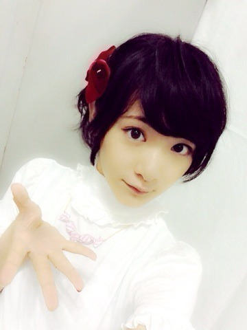
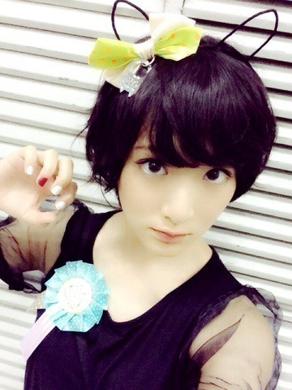

| 2014/06 22 Sun | 横浜個別握手会ヽ( ・∀・)ノ |
遅くなりました〜。
昨日は横浜にて個別握手会がありました！
来て下さった皆様ありがとうございましたヽ(・∀・)ノ
女の子と初めましてさんが沢山来てくれて嬉しかったです

どんどん乃木坂知られて来てるっ！！
乃木坂を知ったきっかけが生駒ちゃんだよって言ってくれるのが一番嬉しい！！
私は乃木坂46を広める為にならぶっ倒れてもいい！！！！
いやむしろ倒れるっっっっ！！！
ははっ♡
お洋服紹介しますね


どちらも原宿系ですね⭐︎
黒の方は
MINT NeKOムック本第二弾についてくる付録ちゃん達を引き連れてみました。
指差ししてるやつね。
私は猫になりたい。
白の方は
全身one spoですヽ(・∀・)ノ
結構通ってるのよ♡
最近スカート履くよ。
最近女の子らしくしてるよ。
18過ぎてから一気に顔も体も成長して来た。。
恐ろしや18歳。
みんながびっくりするほど綺麗に可愛くなってやるんだからねっっ
体幹トレーニングに、柔軟体操に、姿勢よく歩く事は毎日してるよっヽ(・∀・)ノ
そしてお留守番だった皆様にエアー握手会開催しますねっ


もう一枚ヽ(・∀・)ノ

猫っ！！
握手会については皆様には沢山ご協力頂きました。
入場時の検査や荷物の制限など、前とは握手会の仕組みが違うよっ⁈
距離が遠くなったよ⁈
などの意見を聞きました。
これからいろんな事を試しながらどれがいい握手会の進め方なのかを考えていくと思いますが。
これからどうなって行くのかわかりませんが、私はしっかりと考えて握手会をして行きたいなと思いました。
これからも楽しくイベントが行えますように。
へばなっ！⭐︎
コメント(713)
2014/06/22 22:12